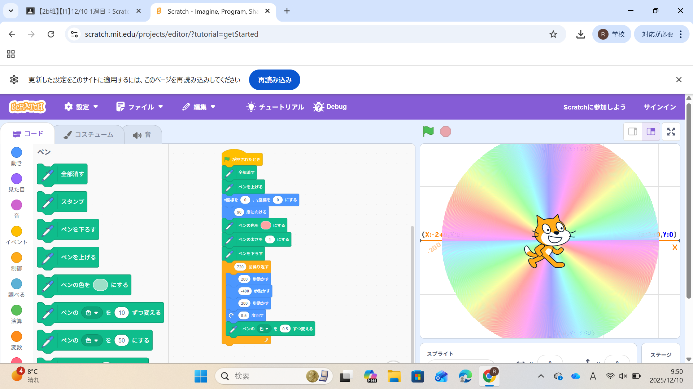
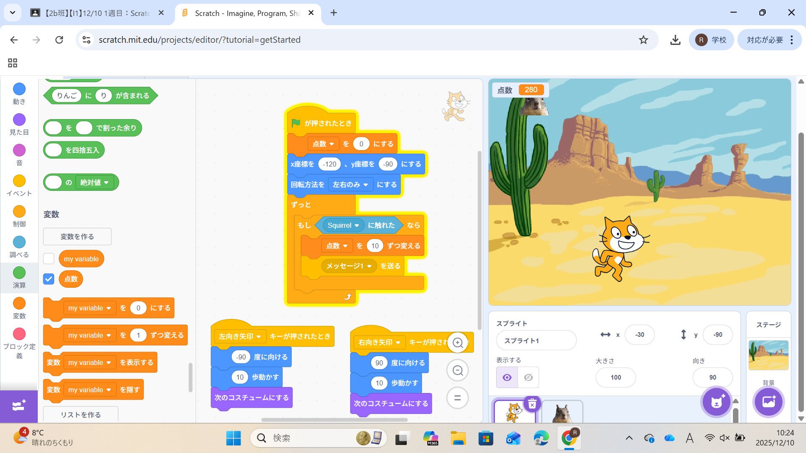

1週目のレポート ： 公大高専１年実習I-1
2b班35番 Yosei10
第1週目
1-1 サイエンスアート

1.内容
Scratchを用いて行った。図形を描くにはまずスプライトを動かす必要があるのでn歩動かすを
使用し、角度をつけることで平面図形がかけるようになる。しかし、動くだけでは図形は描け
ないのでペンを利用して線を引けるようにし、図形ができるようになる。そして、繰り返しコマ
ンドを使うことで連続的に動かせるのでより自由にデザインできるようになる。
2.感想
Scratchは小学生の時に使ったことがあるので操作自体は慣れていたが、ペンという機能は初めて
使ったので使い方を知れてよかった。Scratchで図形を作れることは知らなかったのでとても興
味深かった。自由に作っていい時にペンの太さと角度を1にしたらすごく綺麗で鮮やかな円を作る
ことができた。
1-2 ゲーム

1.内容
これもScratchを使って作った。矢印キーで猫を動かせるようにし、座標や乱数を用いて上からものが
降ってくるようにした。そして、変数を用いてものが猫に触れたときに点数が増えるようにした。
2.感想
落ちるものの座標や落ちる時間が一定だったら面白くないので、乱数を用いることでランダムな位置や
時間で落ちるようになったのでとてもおもしろかった。変数を使うことで得点が表示されるようになった
のでよりゲームっぽくなった。
1-3 ホームページ作成
私のホームページ
1.内容
githubを用いてホームページを作った。コードを編集してホームページに表示される文字が変わるようにした。
編集するときは編集したいファイルを開いて編集ボタンを押して編集する。編集し終わったらCommit changesを押し、
保存する。
2.感想
今までホームページを作ったことがなかったのでそんな自分でも作れるのかなと思っていたけど、案外
うまく作れて楽しかった。 ちゃんと反映されてるのを見たときが一番達成感があった。
各ページへのリンク
1週目のレポート
2週目のレポート
3週目のレポート
私のホームページ